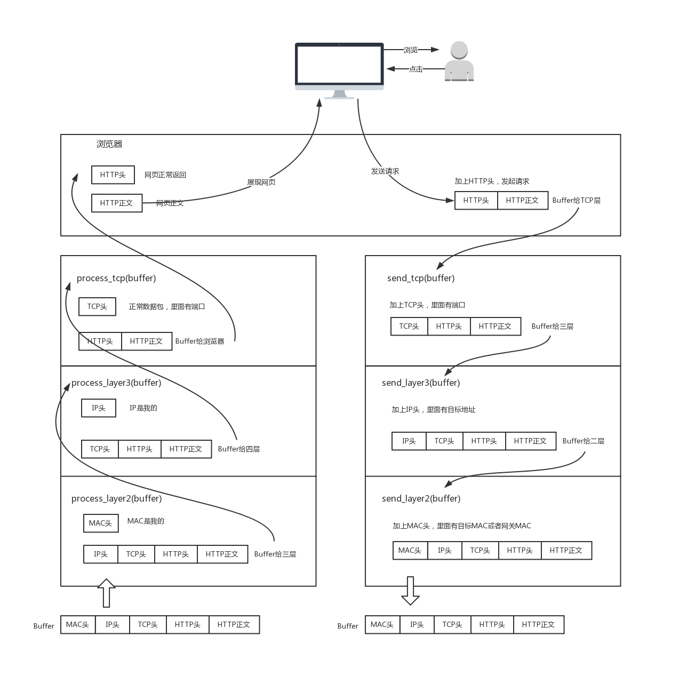
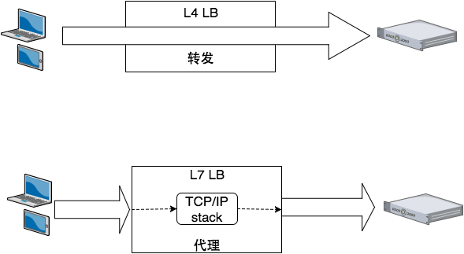
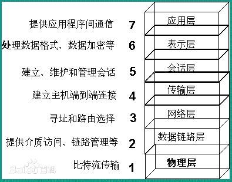
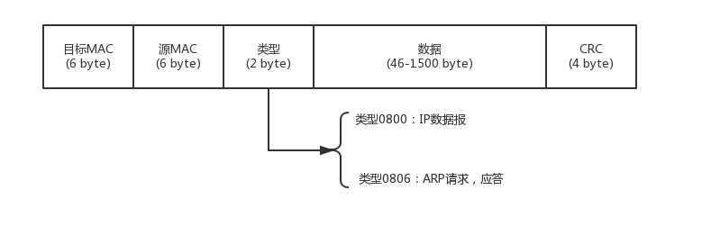
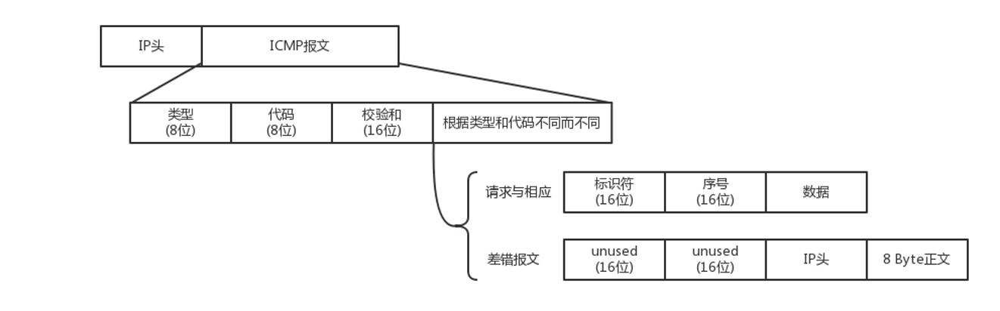

网络知识第一序章
趁着这段时间有点时间，把之前了解的零零散散的网络知识笔记都整理了一下，集中回顾一遍，加深一下印象。
网络方面的东西，我也是后面才去详细了解的，之前知道的都比较片面，对一些点知道的比较浅，也就对UDP、TCP了解的会稍微多一点，后面当我详细去了解的时候，我发现看完之后豁然开朗，就像表面上没改变什么，但实际上对上层的事了解的更多了，很玄妙的感觉。
HTTP请求发送，网络各层级操作一览
对于二层设备、三层设备、四层LB和七层LB的时候，其对应的就是网络协议中的不同层级。
网络中的上下层，其实更具体的说是内外层，最外层是MAC地址，最内层是HTTP包。
发送端类似于打包，接收端类似于拆封。
当一个网络包从一个网口经过的时候，你看到了，首先先看看要不要请进来，处理一把。有的网口配置了混杂模式，凡是经过的，全部拿进来。
所谓的二层设备、三层设备，都是这些设备上跑的程序不同而已。一个HTTP协议的包经过一个二层设备，二层设备收进去的是整个网络包。这里面HTTP、TCP、 IP、 MAC都有。什么叫二层设备呀，就是只把MAC头摘下来，看看到底是丢弃、转发，还是自己留着。那什么叫三层设备呢？就是把MAC头摘下来之后，再把IP头摘下来，看看到底是丢弃、转发，还是自己留着。
四层、七层负载均衡


负载均衡又分为四层负载均衡和七层负载均衡。四层负载均衡工作在OSI模型的传输层，主要工作是转发，它在接收到客户端的流量以后通过修改数据包的地址信息将流量转发到应用服务器。
七层负载均衡工作在OSI模型的应用层，因为它需要解析应用层流量，所以七层负载均衡在接到客户端的流量以后，还需要一个完整的TCP/IP协议栈。七层负载均衡会与客户端建立一条完整的连接并将应用层的请求流量解析出来，再按照调度算法选择一个应用服务器，并与应用服务器建立另外一条连接将请求发送过去，因此七层负载均衡的主要工作就是代理。
L4负载均衡，更准确的术语是“第 3/4 层负载平衡”——因为负载平衡器的决定基于两个 IP 地址源服务器和目标服务器（第 3 层）以及应用程序的 TCP 端口号（第 4 层）。“第 7 层负载平衡”更准确的术语可能是“第 5 层到第 7 层负载平衡”，因为 HTTP 结合了 OSI 第 5、6 和 7 层的功能。
-
问：图中为什么经过L4转发是直连到后端server，L7不是？
-
答：L4是基于传输层，也就是TCP/UDP这一层，以TCP为例，看看TCP包头的格式以及IP包头格式：
一个完整的网络如下：

客户端向负载均衡发送SYN请求建立第一次连接，通过配置的负载均衡算法选择一台后端服务器，并且将报文中的IP地址信息修改为后台服务器的IP地址信息，因此TCP三次握手连接是与后端服务器直接建立起来的。
七层服务均衡在应用层选择服务器，只能先与负载均衡设备进行TCP连接，然后负载均衡设备再与后端服务器建立另外一条TCP连接通道。
到L7 Server时，网络包已经被扒得只剩下HTTP数据了，无法做更多的更底层协议的操作。但更方便做数据清洗，因为这已经是原始的数据了，可以根据规则筛选数据。
DHCP动态分配IP
Linux 通过判断判断IP的网段，来判断一个IP是否与自己处于同一网络环境内。（至于实际其是否在同一环境则未知）。
在同一网段，它才会发送ARP请求，获取MAC地址。
如果这是一个跨网段的调用，它便不会直接将包发送到网络上，而是企图将包发送到网关。
如果你配置了网关的话，Linux会获取网关的MAC地址，然后将包发出去。
如果没有配置网关呢？那包压根就发不出去。
IP配置：不同系统的配置文件格式不同，但是无非就是CIDR、子网掩码、广播地址和网关地址。
- CIDR： 10.100.122.2/24，24的意思是，32位中，前24位是网络号，后8位是主机号。一般家里地上网设备不会超过256个，所以/24基本就够了。有时候我们也能见到/16的CIDR，这两种是最常见的，也是最容易理解的。
- 广播地址，10.100.122.255
- 子网掩码，255.255.255.0
DHCP（Dynamic Host Configuration Protocol，动态主机配置协议）是一个局域网的网络协议，使用UDP协议工作， 主要给内部网络或 网络服务供应商自动分配 IP地址
1 | sequenceDiagram |
客户机会在租期过去50%的时候，直接向为其提供IP地址的DHCP Server发送DHCP request消息包。
客户机接收到该服务器回应的DHCP ACK消息包，会根据包中所提供的新的租期以及其他已经更新的TCP/IP参数，更新自己的配置。这样，IP租用更新就完成了。
物理层到MAC层
物理层
正常两台电脑是可以直接互联的，需要配置这两台电脑的IP地址（相同网段）、子网掩码和默认网关。再配上一根交叉网线。（以前不同，还以为网线都是一类——交叉直连网线，后面搞嵌入式才发现交叉、直连是两种网线，当前网卡已可以自适应）
两台电脑互联即构成局域网，即LAN。
多台电脑也可以使用集线器（Hub）。这种设备有多个口，可以将宿舍里的多台电脑连接起来。但是，和交换机不同，集线器没有大脑，它完全在物理层工作。它会将自己收到的每一个字节，都复制到其他端口上去。这是第一层物理层联通的方案。
MAC层（数据链路层）
多电脑连接中，Hub采取的是广播的模式，如果每一台电脑发出的包，宿舍的每个电脑都能收到。传输数据过程中易产生冲突，带宽利用率不高
MAC层就是用来解决多路访问的堵车问题的。而交换机的出现也是在解决了在广播的情况下，避免冲突的产生。
不使用广播方式，就需要解决几个问题：
- 这个包是发给谁的？谁应该接收？
- 大家都在发，会不会产生混乱？有没有谁先发、谁后发的规则？
- 如果发送的时候出现了错误，怎么办？
大家都在发，会不会产生混乱？有没有谁先发、谁后发的规则？
MAC的全称是Medium Access Control，即媒体访问控制。控制在往媒体上发数据的时候，谁先发、谁后发的问题。防止发生混乱。这解决的是第二个问题。这个问题中的规则，学名叫多路访问。以太网中使用随机接入协议。（需要发就发，网络堵塞的适合就等会再发）
解决了第二个问题，就是解决了媒体接入控制的问题，MAC的问题也就解决好了。这和MAC地址没什么关系。
这个包是发给谁的？谁应该接收？
这里用到一个物理地址，叫作**链路层地址。**但是因为第二层主要解决媒体接入控制的问题，所以它常被称为MAC地址。
解决第一个问题就牵扯到第二层的网络包格式。对于以太网，第二层的最开始，就是目标的MAC地址和源的MAC地址。

接下来是类型，大部分的类型是IP数据包，然后IP里面包含TCP、UDP，以及HTTP等，这都是里层封装的事情。
有了这个目标MAC地址，数据包在链路上广播，MAC的网卡才能发现，这个包是给它的。MAC的网卡把包收进来，然后打开IP包，发现IP地址也是自己的，再打开TCP包，发现端口是自己，也就是80，而nginx就是监听80。
对于以太网，第二层的最后面是CRC，也就是循环冗余检测。通过XOR异或的算法，来计算整个包是否在发送的过程中出现了错误，主要解决第三个问题。
正常情况下是只知道对方的IP，不知道MAC地址的，这就需要用到ARP协议，就是已知IP地址，求MAC地址的协议。即发送一个广播包，谁是这个IP谁来回答。为了避免每次都用ARP请求，机器本地也会进行ARP缓存。当然机器会不断地上线下线，IP也可能会变，所以ARP的MAC地址缓存过一段时间就会过期。
交换机是有MAC地址学习能力的，学完了它就知道谁在哪儿了，不用广播了。
总结：
Hub：
1.一个广播域，一个冲突域。
2.传输数据的过程中易产生冲突，带宽利用率不高
Switch：
1.在划分vlan的前提下可以实现多个广播域，每个接口都是一个单独的冲突域
2.通过自我学习的方法可以构建出CAM表，并基于CAM进行转发数据。
3.支持生成树算法（STP，全称Spanning Tree Protocol）。可以构建出物理有环，逻辑无环的网络，网络冗余和数据传输效率都甩Hub好几条街。SW是目前组网的基本设备之一。
CAM表，我理解其就是MAC表，也就是MAC地址与Port的对应的一个table。
冲突域（物理分段）：同一物理网段上所有节点的集合或以太网上竞争同一带宽的节点集合
广播域：接收同样广播消息的节点的集合
交换机MAC头：

这样只有相同VLAN ID的包，才会互相转发，不同VLAN的包，是看不到的。
我们可以设置交换机每个口所属的VLAN。
交换机之间通过Trunk口连接，它可以转发属于任何VLAN的口。
如果没有STP算法：
ARP广播时，交换机会将一个端口收到的包转发到其它所有的端口上。
比如数据包经过交换机A到达交换机B，交换机B又将包复制为多份广播出去。
如果整个局域网存在一个环路，使得数据包又重新回到了最开始的交换机A，这个包又会被A再次复制多份广播出去。
如此循环，数据包会不停得转发，而且越来越多，最终占满带宽，或者使解析协议的硬件过载，行成广播风暴。
ICMP与Ping
ICMP相当于网络世界的侦察兵。有两种类型的ICMP报文，一种是主动探查的查询报文，一种异常报告的差错报文；
ping使用查询报文，Traceroute使用差错报文。(其在网络层，自然包裹IP头)
查询报文，是一种主动请求，并且获得主动应答的ICMP协议。
对ping的主动请求，进行网络抓包，称为ICMP ECHO REQUEST。同理主动请求的回复，称为ICMP ECHO REPLY。
- 标识符：区别不同的功能包；
- 序号：一组包的编号；
- 数据：ping还会存放发送请求的时间值，来计算往返时间，说明路程的长短
差错报文类型，返回时，类型代表出错类型。例如终点不可达为3，源抑制为4，超时为11，重定向为5。
差错报文后面是跟上出错的那个IP包的IP头和IP正文的前8个字节。
Traceroute：
- 故意设置特殊的TTL，来追踪去往目的地时沿途经过的路由器
使用IP header的TTL（Time To Live）这个field，Traceroute的参数指向某个目的IP地址，它会发送一个UDP的数据包。将TTL设置成1，路由器拿到包后将TTL减1，TTL为0，则会返回ICMP time exceeded
怎么知道UDP有没有到达目的主机呢？Traceroute程序会发送一份UDP数据报给目的主机，但它会选择一个不可能的值作为UDP端口号（大于30000）。当该数据报到达时，将使目的主机的 UDP模块产生一份“端口不可达”错误ICMP报文。如果数据报没有到达，则可能是超时。
- 故意设置不分片，从而确定路径的MTU(最大传输单元)
若ICMP差错报文自身出错，则不再发送关于差错报文的差错报文。
为何传递UDP包其返回ICMP报文？
协议栈能正常走到UDP，就正常返回UDP。
还没到UDP和TCP的传输层，所以UDP出错可以返回ICMP差错报文。（ICMP属于网络层，是管理和控制IP的一种协议）
参考文献
本文标题：网络知识第一序章
文章作者：小师
发布时间：2022-03-17
最后更新：2022-05-04
原始链接：chunlife.top/2022/03/17/网络知识第一序章/
版权声明：本站所有文章均采用知识共享署名4.0国际许可协议进行许可